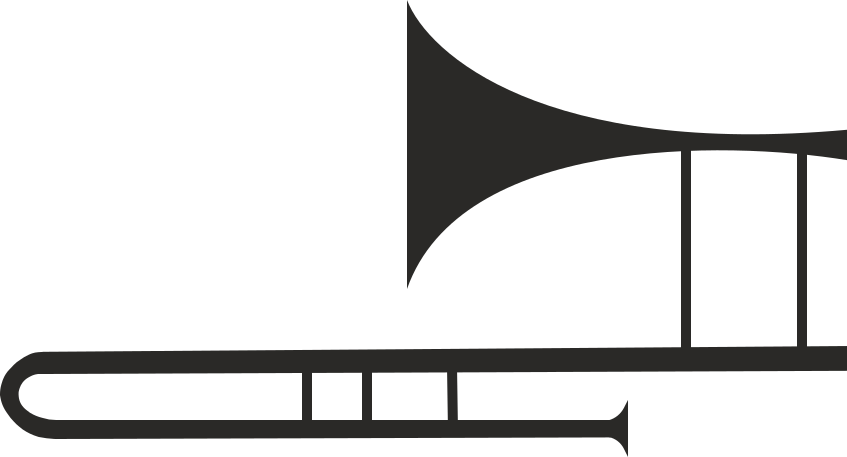

LIKE A MUSIC
Семейство шрифтов Marlene было выпущено
в 2008 году, авторы проекта Никола Джурек
и Хрвое Живчич, кириллическую версию создал
Илья Рудерман
Cкругления в выступающих элементах
и апексах делают заглавные буквы
изящными и элегантыми
Сразу после выхода Typographica
включила Marlene в шорт-лист
награды «Лучшие шрифты — 2008»
Семейство Marlene было включено
в число лучших гарнитур
десятилетия на конкурсе Letter 2,
организованном AtypI (2011)
В 2010 году Никола Джурек
получил премию Icograda
Excellence Award за проекты
Marlene, Brioni и Plan Grotesque
и был удостоен награды
Международной ассоциации
художественных критиков
(IAAC) за разработанные им
семейства шрифтов Marlene,
Delvard и Plan Grotesque
Aзербайджанский, Албанский, Английский, Африкаанский,
Белорусский, Болгарский, Венгерский, Галисийский, Гол-
ландский, Датский, Ирландский, Исландский, Испан-
ский, Итальянский, Каталонский, Курдский, Латыш-
ский, Литовский, Монгольский, Немецкий, Норвеж-
ский, Польский, Португальский, Румынский,
Русский, Сербский, Словацкий, Словенский,
Узбекский, Украинский, Финский, Француз-
ский, Хорватский, Чешский,
Шведский,Эсперанто,
Эстонский
38
MARLENE COLLECTION
Сразу после выхода Typographica
включила Marlene в шорт-лист
награды «Лучшие шрифты — 2008»
NIKOLA DJUREK
M
ARLENE
ICOGRADA
EXCELLENCE
AWARD
2010
LETTER2
Atypl 2011
Лучшие гарнитуры
десятилетия
IAAC
Сочетание плавности выносных элементов,
ножек, хвостов и строгоcти горизонтальных
засечек, а так же контраст толщины
соединительных штрихов, штамбов и дуг
придают шрифту ритмичность
Благодаря мощным
прямоугольным
вертикальным засечкам
создаёт ощущение
жизненной силы
и стойкости
Best of
classic
Jazz
Объёмные внутренние просветы
в округлых элементах делают
шрифт легким и динамичным
Резкий и стремительный, с элегантными
и тонкими восходящими штрихами
и необычно высоко расположенными
точками соединения кривых
с основными штрихами
JAZZ FESTIVAL
# JAZZ FESTI
JAZZ FESTIVA
21 — 30.10
25.12
Certificate
2022
Семейство Marlene включает в себя
текстовую версию с восемью начертаниями.
Вместе они образуют шрифтовую палитру,
способную удовлетворить запросы самых
требовательных дизайнеров
21 — 30
октября
JAZZ
FESTIVAL
21.10
пятница
22.10
суббота
15:00 — 15:30
Игорь Баутман
и Московский
Джазовый оркестр
16:00 — 16:40
Юрий Башмет
и Камерный ансамбль
«Солисты Москвы»
17:00 — 17:50
Dr. L.Subramaniam
18:00 — 19:00
Джаз бэнд
Сергея Макеева
20:00 — 20:30
L’One (Jazz Set)
12:00 — 14:30
Игорь Баутман
и Московский
Джазовый оркестр
15:00 — 18:40
Юрий Башмет
и Камерный ансамбль
«Солисты Москвы»
Б22ДЗ09
Валентина Бадальянц